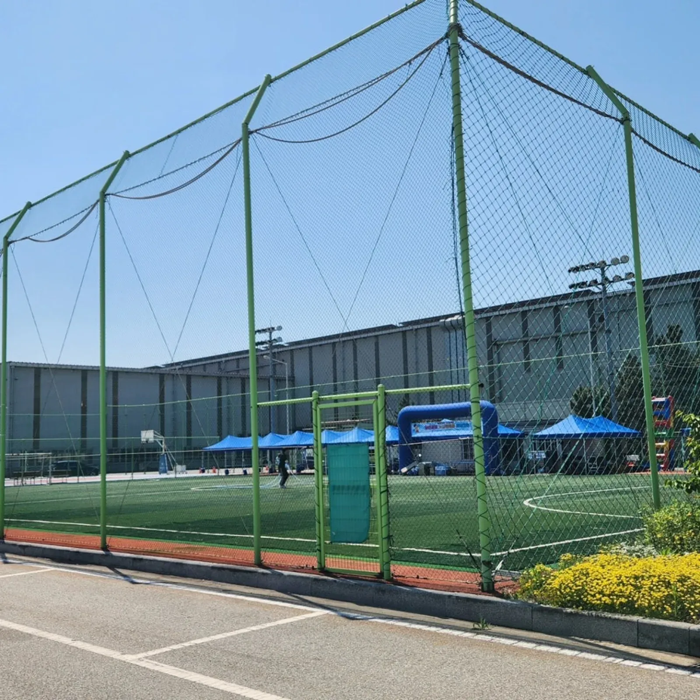
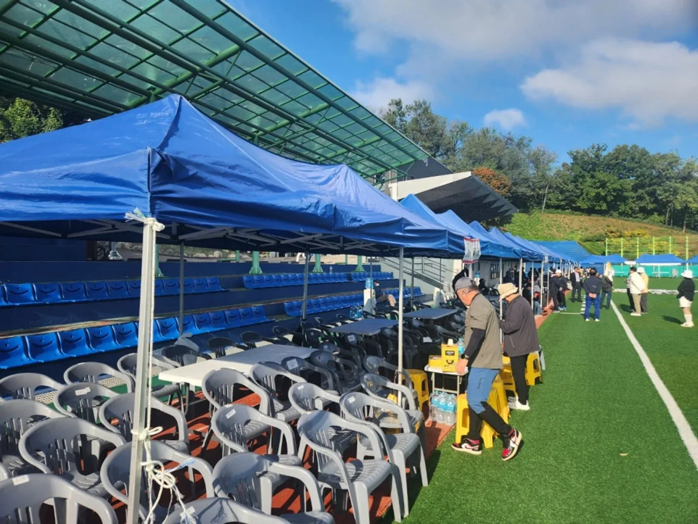
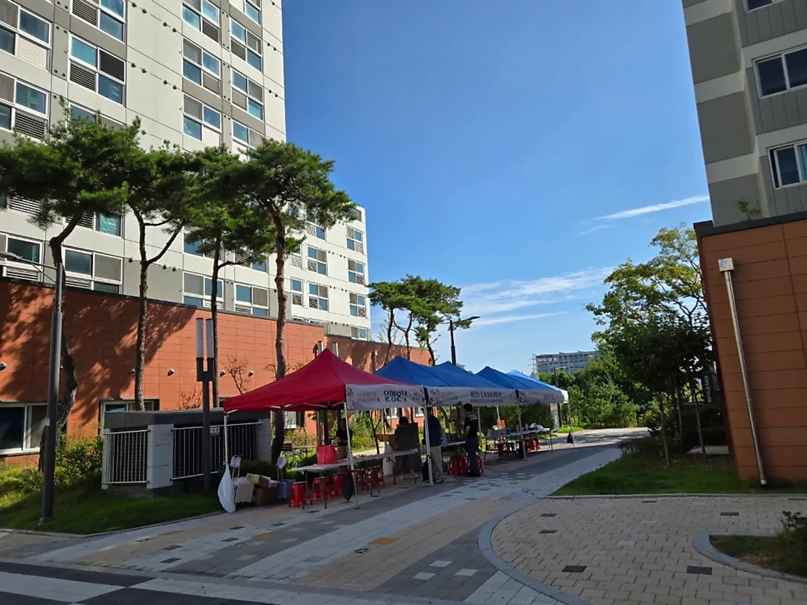

당진 행사 준비 · 2026년 10월 28일
당진 기업 체육대회 — 여러 날 조별로 나눠 운영하기
당진 기업 체육대회처럼 교대 근무가 있는 회사는 하루에 한 조씩 여러 날 나눠 여는 방법이 있습니다. 공장을 멈추지 않아도 되고, 조마다 같은 수준의 행사를 받을 수 있습니다. 행사ON은 동국제강 4일간 기업 체육대회(2026)에서 1조부터 4조까지 하루 한 조씩, 천막 · 음향 · 테이블 · 의자에 MC · 운영 스태프 · 게임장비와 프로그램 진행을 맡았습니다. 당진은 아산 탕정 본사에서 당진시청까지 차로 약 45분 거리입니다.

- 교대 근무 회사는 하루 한 조씩 여러 날 나눠 체육대회를 열 수 있습니다.
- 여러 날 행사는 같은 행사를 되풀이하는 것이 아니라 날마다 장비 · 동선 · 날씨를 다시 확인하는 일입니다.
- 날마다 다른 MC를 세울지, 같은 MC로 갈지는 회사가 정하고 미리 알려 주면 됩니다.
- 천막 · 음향은 첫날 세우고 마지막 날 철수하는지, 날마다 철수하는지를 장소 사정에 따라 정합니다.
1. 당진 기업 체육대회, 왜 여러 날로 나누나
공장을 돌리는 회사는 전 직원이 한날 한자리에 모이기 어렵습니다. 그래서 조를 나눠 하루 한 조씩 체육대회를 여는 방식을 씁니다. 동국제강 체육대회도 공장을 멈추고 한꺼번에 여는 대신 1조부터 4조까지 하루에 한 조씩 4일 동안 이어졌습니다.
| 방식 | 좋은 점 | 챙길 점 |
|---|---|---|
| 하루에 전체 | 한 번에 끝남, 장비 하루 | 생산을 멈춰야 함 |
| 여러 날 조별 | 생산을 멈추지 않음 | 날마다 같은 질을 유지해야 함 |
| 오전 · 오후 나눔 | 하루에 두 조 | 시간이 짧아 프로그램을 줄여야 함 |
회사 요청에 따라 동국제강 체육대회는 4일 동안 날마다 다른 MC가 진행을 맡았습니다. 조마다 분위기가 다르니 MC를 바꾸는 것도 방법이고, 같은 MC로 가면 진행 흐름이 일정하다는 장점이 있습니다.
2. 여러 날 체육대회는 날마다 다시 확인합니다
여러 날 이어지는 체육대회는 같은 행사를 되풀이하는 것이 아닙니다. 하루가 끝나면 장비 상태와 프로그램, 참가자 동선, 현장 상황을 다시 보고 다음 날을 준비합니다.
- 하루를 마치면 게임장비 수량과 고장 여부를 확인하고 다음 날 쓸 것을 채웁니다.
- 천막 고정과 음향 케이블 상태를 밤사이 바람 · 비에 대비해 점검합니다.
- 다음 날 조의 인원과 MC가 바뀌면 진행 순서와 호명 명단을 새로 받습니다.
- 날씨 예보를 보고 비가 오면 실내로 옮길지, 순서를 바꿀지 회사와 미리 정합니다.

3. 한 팀이 맡으면 줄어드는 일
체육대회에는 천막업체 · 음향업체 · MC · 진행업체가 다 필요합니다. 이걸 따로 부르면 담당자가 업체마다 연락하고 순서를 맞춰야 합니다. 동국제강 체육대회는 사전 미팅부터 설치와 현장 운영까지 한 팀이 맡은 현장입니다.
| 준비 | 맡는 일 |
|---|---|
| 사전 미팅 | 조별 일정, 장소, 프로그램 방향 |
| 행사기획 | 종목 · 게임 구성, 시상 방식 |
| 천막 · 테이블 · 의자 | 대기석 · 본부석 · 시상대 자리 |
| 음향 | 구장 전체 안내 방송, 배경 음악 |
| MC · 운영 스태프 | 진행, 경기 운영, 점수 집계 |
| 게임장비 | 단체 게임 도구 준비 · 회수 |
4. 명랑운동회처럼 작은 체육대회도
체육대회가 꼭 큰 회사 행사일 필요는 없습니다. 성당 · 교회 명랑운동회처럼 공동체 안에서 여는 작은 운동회도 MC · 음향 · 천막만 갖추면 분위기가 크게 달라집니다. 규모가 작을수록 경기보다 함께 웃는 게임 비중을 늘리는 편이 좋습니다.

5. 당진 기업 체육대회 견적 항목표
여러 날 기업 체육대회 견적에 들어가는 항목입니다. 자동 견적서에서 골라 문의하시면 조 수 · 일정 · 장소에 맞춰 구성과 견적을 정리해 드립니다. 금액은 규모 · 장소 · 일정에 따라 상담 후 안내합니다.
| 항목 | 확인할 것 |
|---|---|
| 기업 체육대회 (여러 날 진행) | 조 수, 날짜, 하루 진행 시간 |
| MC · 운영 스태프 | 날마다 같은 MC인지, 스태프 인원 |
| 게임 프로그램 · 게임장비 | 조별 인원, 종목 |
| 캐노피 천막 · 행사용 테이블 · 의자 | 동 수 · 수량, 매일 철수 여부 |
| 음향 시스템 | 구장 크기, 안내 방송 범위 |
당진 지역 안내는 당진 행사 안내에, 4일간의 기록은 동국제강 체육대회 이야기에 있습니다. 학교 체육대회 준비는 천안 체육대회 대행 글을 참고하세요.
자주 묻는 질문
하루에 두 조를 할 수도 있나요?
오전 · 오후로 나눠 하루 두 조를 진행하는 방법도 있습니다. 시간이 짧아지는 만큼 프로그램 구성을 함께 조정합니다.
장비는 매일 다시 설치하나요?
장소에서 장비를 밤사이 두어도 되면 첫날 세우고 마지막 날 철수합니다. 안 되면 날마다 설치 · 철수합니다. 장소 사정을 사전 미팅에서 확인합니다.
식사도 준비해 주나요?
식사는 회사가 준비하시는 부분입니다. 식사 자리로 쓸 천막 · 테이블 · 의자는 견적에 함께 넣을 수 있습니다.
행사 날짜가 정해지셨나요?
날짜 · 장소 · 인원만 알려 주시면 구성과 견적을 정리해 드립니다. 상담은 24시간 받습니다.